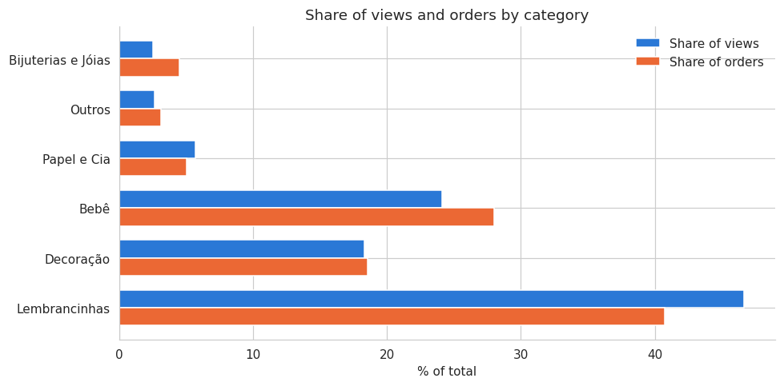
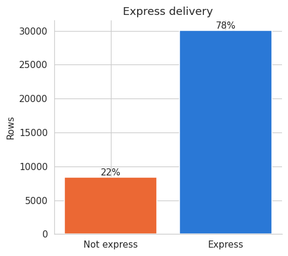
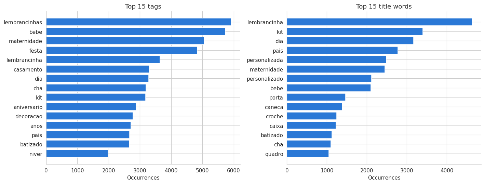
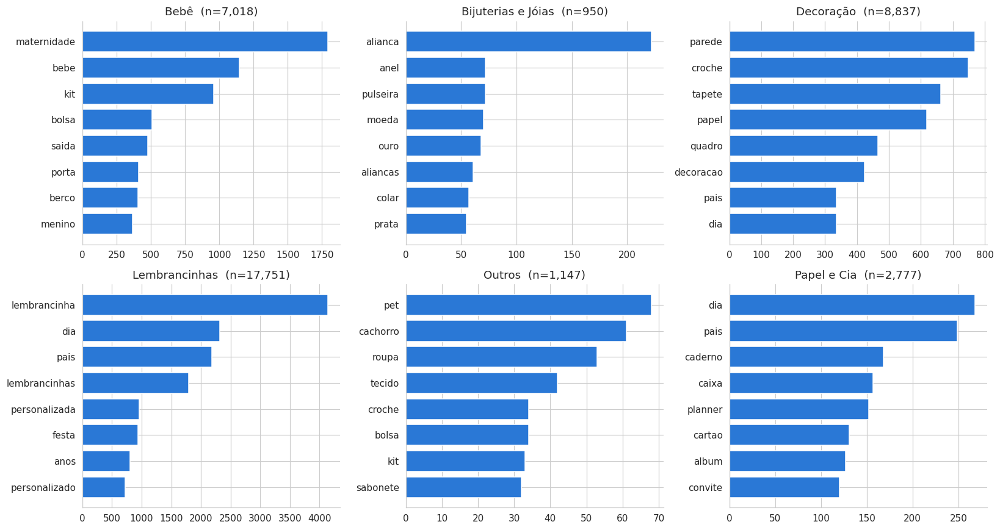

This is the first notebook in a project investigating the Elo7 Data Science Challenge (full problem statement: ../docs/elo7-ds-challenge-en.md). The question at the heart of the whole project is:
Can a user’s search intent be inferred from the search query alone?
Answering that eventually requires three systems: a product classifier, an unsupervised search-intent model, and a hybrid recommender, built across the notebooks that follow this one. Before any of that, we need to actually understand the data we’re working with, which is the job of this notebook.
The data, briefly
The dataset (../data/raw/elo7_recruitment_dataset.csv) is 38,507 rows, each one a click on a product resulting from a search query, not one row per product. A product can (and does) appear more than once if it was clicked from more than one search. The columns fall into three broad groups:
Full column-by-column semantics, dtypes, and known null counts are documented in ../data/README.md; this notebook builds on that rather than repeating it, and links back to it where the detail matters.
Questions this notebook answers
Numbered to match the section headers below, following the challenge’s own suggestion to state the questions before answering them:
Data overview: what’s the actual unit of a row, and does that matter?
Data quality: where are the gaps, and what do we do about each one?
Category distribution: how imbalanced is the target for Part 2, and does it matter whether we count rows or distinct products?
Product-level numeric features: what do price, weight, and engagement look like, and how do they vary by category?
Text features (tags & title): what’s worth extracting from seller-provided text, and which of two competing feature designs should we keep?
Search query deep dive: what does query text look like on its own, and is there early evidence that category is recoverable from the query alone?
Consolidated correlation: which features move together, and what does that suggest for Part 2 (classification) and Part 3 (intent)?
Key findings & handoff: what do we carry into notebook 02?
1. Setup
We load the raw dataset through the project’s own src.data.load.load_raw_dataset, which already parses creation_date as a datetime, and pull in the text/numeric feature functions from src.features that we’ll use throughout this notebook (and reuse in later ones).
Two colors are defined once, up front, and reused everywhere a chart needs to tell two things apart. We deliberately do not give every category its own color in charts where category is already named on the x-axis: that would be a redundant rainbow encoding a single-series bar chart doesn’t need. Color is reserved for the cases where two genuinely different series share one chart (e.g. express_delivery = yes/no, or two metrics side by side).
Code
from collections import Counterimport matplotlib.pyplot as pltimport numpy as npimport pandas as pdimport seaborn as snsfrom src.data.load import load_raw_datasetfrom src.features.numerical import days_since, order_probability, price_per_weight, rate_per_dayfrom src.features.text import char_length, tokenize, word_count%matplotlib inlinePRIMARY ="#2a78d6"# Blue, the default single hue for magnitude comparisons.SECONDARY ="#eb6834"# Orange, the second series whenever a chart compares exactly two things.sns.set_style("whitegrid")plt.rcParams["figure.dpi"] =110plt.rcParams["axes.spines.top"] =Falseplt.rcParams["axes.spines.right"] =False
2. Data overview
Code
df = load_raw_dataset()print(f"{df.shape[0]:,} rows x {df.shape[1]} columns")df.head()
38,507 rows x 15 columns
product_id
seller_id
query
search_page
position
title
concatenated_tags
creation_date
price
weight
express_delivery
minimum_quantity
view_counts
order_counts
category
0
11394449
8324141
espirito santo
2
6
Mandala Espírito Santo
mandala mdf
2015-11-14 19:42:12
171.890000
1200.0
1
4
244
NaN
Decoração
1
15534262
6939286
cartao de visita
2
0
Cartão de Visita
cartao visita panfletos tag adesivos copos lon...
2018-04-04 20:55:07
77.670000
8.0
1
5
124
NaN
Papel e Cia
2
16153119
9835835
expositor de esmaltes
1
38
Organizador expositor p/ 70 esmaltes
expositor
2018-10-13 20:57:07
73.920006
2709.0
1
1
59
NaN
Outros
3
15877252
8071206
medidas lencol para berco americano
1
6
Jogo de Lençol Berço Estampado
t jogo lencol menino lencol berco
2017-02-27 13:26:03
118.770004
0.0
1
1
180
1.0
Bebê
4
15917108
7200773
adesivo box banheiro
3
38
ADESIVO BOX DE BANHEIRO
adesivo box banheiro
2017-05-09 13:18:38
191.810000
507.0
1
6
34
NaN
Decoração
The single most important thing to internalize before looking at any distribution is that a row is a click event, not a product. Let’s confirm the scale of that difference.
29,801 distinct products and 8,515 distinct sellers, but 38,507 rows, so on average a product in this sample was clicked ~1.3 times. That’s mild, but it’s not zero, and it means any chart that counts rows per category is answering “which categories get clicked most,” while a chart that counts distinct product_id per category is answering “which categories have the most catalog depth in this sample.” Those are different questions, and we’ll keep both readings in view in §3.
It also matters for modeling later: a naive row-level train/test split for the Part 2 classifier risks putting the same product_id (same title, same tags, same everything except the search that led to the click) on both sides of the split. We’ll flag this again in §8 as something the classification notebook needs to handle explicitly, not something to solve here.
count 18117.00000
mean 27.38141
std 60.53336
min 1.00000
25% 8.00000
50% 15.00000
75% 26.00000
max 2460.00000
Name: order_counts, dtype: float64
Zero. Not one of the 18,117 non-null order_counts values is actually 0. The minimum recorded value is 1. That’s a strong signal that this column was only populated when a product had at least one order in the window, and left blank otherwise, rather than being missing at random. So a missing order_counts almost certainly means “zero orders,” and we fill it with 0 accordingly, not a guess, but the reading the data itself supports.
concatenated_tags is missing for only 2 rows. Both are products with a title and category like any other; the seller simply left the tags field blank. We fill these with an empty string '', which our tokenizer already treats as zero tokens, so nothing special is needed downstream.
weight is missing for 58 rows (0.15%). This is small enough that dropping the rows wouldn’t meaningfully change any distribution, but dropping still throws away real click events for no necessary reason, and other columns (price, title, query, category, …) are perfectly usable for those rows. So instead of dropping, we keep the rows and add an explicit weight_missing flag, leaving weight itself as NaN. Anything computed fromweight (like price_per_weight in §4) will then propagate NaN for these rows automatically, rather than silently blending “unknown” with some numeric stand-in.
Worth calling out: weight == 0 (11.4% of rows) and weight missing (0.15% of rows) are two different things. A weight of exactly zero is a value the seller entered; a missing weight is a value nobody entered. We’ll treat these differently everywhere weight is used, starting with price_per_weight below.
The order_probability anomaly
order_counts / view_counts should be a legitimate estimate of the probability that a view turns into an order, so it should never exceed 1. Let’s check.
category
Decoração 9
Bebê 8
Lembrancinhas 8
Outros 1
Bijuterias e Jóias 1
Name: count, dtype: int64
27 rows (0.07%) have more recorded orders than views, presumably orders placed outside of a search-driven view, or a quirk of how the three-month windows for each count were sampled. Before dropping them, the question that matters is whether they’re concentrated somewhere (a specific category, a price range). If they were, dropping could quietly bias the remaining data.
Code
share_of_category = (100* anomaly["category"].value_counts() / df["category"].value_counts()).round(2)print("anomaly rows as a % of each category's own rows:")print(share_of_category.sort_values(ascending=False))print()print("anomaly price stats vs. overall price stats:")print(pd.concat([anomaly["price"].describe(), df["price"].describe()], axis=1, keys=["anomaly", "overall"]))
anomaly rows as a % of each category's own rows:
category
Bebê 0.11
Bijuterias e Jóias 0.11
Decoração 0.10
Outros 0.09
Lembrancinhas 0.05
Papel e Cia NaN
Name: count, dtype: float64
anomaly price stats vs. overall price stats:
anomaly overall
count 27.000000 38507.000000
mean 102.070000 84.054157
std 208.812541 211.805310
min 3.090000 0.070000
25% 25.945000 12.750000
50% 38.250000 28.490000
75% 83.570000 90.000000
max 1100.000000 11509.380000
No concentration: the anomaly touches 0.05–0.11% of rows in every category it appears in at all (and doesn’t appear in Papel e Cia), and the price distribution of the anomalous rows looks like a smaller, noisier version of the overall price distribution, not a distinct population. With no evidence of a systematic pattern and a volume this small, we drop these 27 rows rather than flag them. Unlike weight, there’s no case here for keeping and flagging, since the anomaly makes order_probability itself indefensible for these specific rows without recomputing it.
category is the target for Part 2’s classifier, so its distribution matters twice: once for understanding the catalog, and once for anticipating that a classifier trained on it will need to handle real class imbalance. As flagged in §2, we look at this both per row (click volume) and per distinct product (catalog depth).
Both readings tell the same story at different magnitudes: Lembrancinhas dominates (46% of rows, 43% of distinct products), Bijuterias e Jóias is by far the smallest (2.5% of rows, 2.9% of products), and the ranking of all six categories is identical either way. So for this dataset, the row-vs-product distinction changes the exact percentages but not the qualitative picture: the imbalance itself is real and roughly 18:1 between the largest and smallest class, something Part 2’s evaluation will need to account for (accuracy alone would reward a classifier for just guessing Lembrancinhas).
It’s also worth checking whether that same imbalance shows up in engagement (views and orders), or whether some categories convert disproportionately well despite a smaller catalog.
Code
views_share = (100* df.groupby("category")["view_counts"].sum() / df["view_counts"].sum()).reindex(row_level.index)orders_share = (100* df.groupby("category")["order_counts"].sum() / df["order_counts"].sum()).reindex(row_level.index)fig, ax = plt.subplots(figsize=(9, 4.5))y = np.arange(len(row_level))height =0.36ax.barh(y + height /2, views_share.values, height=height, color=PRIMARY, label="Share of views")ax.barh(y - height /2, orders_share.values, height=height, color=SECONDARY, label="Share of orders")ax.set_yticks(y)ax.set_yticklabels(row_level.index)ax.set_xlabel("% of total")ax.set_title("Share of views and orders by category")ax.legend(frameon=False)fig.tight_layout()plt.show()

Bebê is the interesting case: it’s the third-largest category by product count (18%), but pulls a disproportionate 24% of views and 28% of orders: it converts better than its catalog size alone would predict. Lembrancinhas shows the opposite pattern for orders specifically (41% of orders vs. 47% of views), high traffic, slightly lower conversion. Neither of these is something to correct for in an EDA notebook, but they’re useful context: a recommender that leans purely on popularity (view/order counts) will already skew toward Bebê and Lembrancinhas regardless of what the query says, which is exactly the kind of thing a query-aware system is supposed to do better than.
5. Product-level numeric features
Now the rest of the numeric columns: price, weight, minimum_quantity, express_delivery, view_counts, order_counts, plus price_per_weight, which we derive here.
The null count check confirms the design decision from §3 worked as intended: price_per_weight is NaN for exactly the rows where weight was missing, and nowhere else: no silent blending of “unknown” with a numeric placeholder.
The describe() table shows the pattern the challenge spec itself warns about (“[prices] may not always reflect realistic market values”): price ranges from R$0.07 to R$11,509, with a mean of 84 sitting well above the median of 28, heavily right-skewed (skewness ≈ 17.5). weight and view_counts show the same shape (skewness ≈ 16.8 and ≈ 14.8 respectively). All three need a log scale to plot sensibly, and any model using them raw should expect a few extreme outliers to dominate unless that’s addressed.
Even in log-log scale, all three keep a long right tail: a handful of products with very high price, weight, or view counts. This is expected for a marketplace catalog (a few products go viral or are simply expensive/heavy specialty items) and isn’t itself a data quality issue, but it does mean summary statistics like the mean are not very representative; the median and the shape of the distribution matter more here than any single number.
express_delivery is the one binary flag among these columns, so a two-color bar makes sense here (this is exactly the “compare two things” case the color choice in §1 was reserved for):
Code
express_counts = df["express_delivery"].value_counts().sort_index()fig, ax = plt.subplots(figsize=(4.5, 4))ax.bar(["Not express", "Express"], express_counts.values, color=[SECONDARY, PRIMARY])ax.set_ylabel("Rows")ax.set_title("Express delivery")for i, v inenumerate(express_counts.values): ax.text(i, v, f"{100* v /len(df):.0f}%", ha="center", va="bottom")fig.tight_layout()plt.show()

78% of clicked products offer express delivery: the large majority. Whether that reflects the overall catalog or just what tends to get clicked isn’t something this single chart can answer, but it’s a useful base rate to keep in mind: a classifier or recommender that ignores express_delivery entirely isn’t ignoring a 50/50 signal, it’s ignoring something already skewed 4-to-1.
Finally, how do price, weight, and engagement vary by category? Boxplots on a log scale, one color throughout (the category is already the label on the x-axis, so a per-category rainbow would be redundant here, same reasoning as §4’s bar charts).
Decoração stands out with a visibly higher weight distribution than the rest, consistent with home-decor items (furniture pieces, large wall art) tending to be heavier than, say, party favors or paper crafts. price varies less dramatically across categories than weight does, and view_counts/order_counts echo the engagement pattern already seen in §4 (Bebê pulling ahead of its catalog share). None of these differences look large enough on their own to make category trivially separable from numeric features alone, which is exactly why Part 2 will need title/concatenated_tags text as well, not just these numeric columns.
6. Text features: tags & title
Seller-provided tags and titles are unstructured text, but we can still extract useful signal from them: how much information a seller provided, and what vocabulary shows up most often.
Choosing a length feature: characters or words?
There are two natural ways to measure “how much text is here”: count words, or count characters. They’re strongly related but not identical, so it’s worth deciding deliberately which one to keep rather than carrying both forward.
Code
text_cols = ["concatenated_tags", "title", "query"]for col in text_cols: df[f"n_words_{col}"] = df[col].map(word_count) df[f"n_chars_{col}"] = df[col].map(char_length)feature_cols = [f"{prefix}_{col}"for col in text_cols for prefix in ("n_words", "n_chars")]df[feature_cols].corr(numeric_only=True).loc[ [f"n_words_{c}"for c in text_cols], [f"n_chars_{c}"for c in text_cols]]
n_chars_concatenated_tags
n_chars_title
n_chars_query
n_words_concatenated_tags
0.980424
0.083196
-0.009894
n_words_title
0.007967
0.854144
0.215439
n_words_query
-0.072988
0.216527
0.854662
Each field’s own word-count and character-count are highly correlated with each other (as expected: more words usually means more characters), and there’s little cross-field correlation, so this is really three separate choices (one per field), not one. To choose between the word-count and character-count variant within each field, we look at how many distinct values each one actually takes: a coarser feature (fewer distinct values) throws away more information than a finer one at the same nominal “size.”
Code
for col in text_cols: n_word_vals = df[f"n_words_{col}"].nunique() n_char_vals = df[f"n_chars_{col}"].nunique()print(f"{col:20s} distinct word-counts: {n_word_vals:>4} distinct char-counts: {n_char_vals:>4}")
For every field, the character-count variant has far more distinct values than the word-count variant (e.g. title: 58 distinct character-lengths vs. only 13 distinct word-counts): the word-count feature is heavily discretized (most titles are somewhere between 3 and 8 words, full stop), while the character-count captures much finer variation. We keep the len_* (character-count) variant for each field and drop the n_words_* variant.
Code
df["len_tags"] = df["n_chars_concatenated_tags"]df["len_title"] = df["n_chars_title"]df["len_query"] = df["n_chars_query"]df = df.drop(columns=[c for c in df.columns if c.startswith("n_words_") or c.startswith("n_chars_")])
Most frequent tags and title words
Tags aren’t full sentences, so we tokenize them without removing Portuguese stopwords (there’s essentially nothing but content words in a tag list anyway). Titles are closer to natural language, so stopwords are dropped there to keep the frequency table meaningful.
Code
all_tags = [tag for tags in df["concatenated_tags"] for tag in tokenize(tags)]tag_counts = Counter(all_tags)print(f"{len(all_tags):,} tag tokens, {len(set(all_tags)):,} distinct")all_title_words = [w for title in df["title"] for w in tokenize(title, drop_stopwords=True)]title_counts = Counter(all_title_words)print(f"{len(all_title_words):,} title tokens, {len(set(all_title_words)):,} distinct")fig, axs = plt.subplots(1, 2, figsize=(13, 5))for ax, counts, label inzip(axs, [tag_counts, title_counts], ["tags", "title words"]): top = counts.most_common(15) words, freqs =zip(*top) ax.barh(words[::-1], freqs[::-1], color=PRIMARY) ax.set_title(f"Top 15 {label}") ax.set_xlabel("Occurrences")fig.tight_layout()plt.show()
227,244 tag tokens, 7,598 distinct
147,894 title tokens, 7,225 distinct

Tags and titles surface a near-identical vocabulary: lembrancinha(s), bebe, maternidade, kit, dia, pais, festa, croche, decoracao, which isn’t surprising (sellers write both to be found for the same things) but is a useful sanity check that these two text fields aren’t capturing meaningfully different information about a product. It also previews the vocabulary we’ll compare against query in §7: if the same words dominate tags, titles, and queries, that would be direct evidence that a query alone carries enough signal to recover a product’s likely category, which is the central question this whole project is built around.
7. Search query deep dive
This is the section that matters most for the project’s actual thesis. query deserves real, dedicated treatment, not the same shallow word-frequency pass as title/concatenated_tags with no comparison against category: notebooks 03 (intent modeling) and 05 (system integration) both depend on understanding query text well, so we go deeper here.
Length and repetition
We already picked len_query (characters) as the length feature in §6. How much of the traffic is repeat queries, versus one-off searches?
Code
n_unique_queries = df["query"].nunique()print(f"{n_unique_queries:,} distinct queries across {len(df):,} rows ({100* n_unique_queries /len(df):.1f}% unique)")query_counts = df["query"].value_counts()top20_share =100* query_counts.head(20).sum() /len(df)top100_share =100* query_counts.head(100).sum() /len(df)singletons = (query_counts ==1).sum()print(f"top 20 queries account for {top20_share:.1f}% of all rows")print(f"top 100 queries account for {top100_share:.1f}% of all rows")print(f"{singletons:,} queries ({100* singletons / n_unique_queries:.1f}% of distinct queries) appear exactly once")query_counts.head(10)
6,392 distinct queries across 38,480 rows (16.6% unique)
top 20 queries account for 5.5% of all rows
top 100 queries account for 15.9% of all rows
1,427 queries (22.3% of distinct queries) appear exactly once
query
bolsa maternidade 152
dia dos pais 148
lembrancinha dia dos pais 127
porta maternidade 126
batizado 125
lembrancinha 122
lembrancinha maternidade 122
lembrancinha batizado 121
lembrancinhas maternidade 117
presente dia dos pais 106
Name: count, dtype: int64
Search traffic is concentrated but not extremely so: the top 20 queries alone account for only 5.5% of all rows, and the top 100 for 16%. At the other end, 22% of distinct queries appear only once in the whole sample. This is a long tail with a short, dense head, relevant for notebook 03’s clustering, since it means a query-level intent model will need to generalize well beyond the most common queries rather than just memorizing them, but it also means the head alone (a few hundred queries) already covers a meaningful share of real traffic and is worth spot checking by hand later.
Does the query hint at the category?
This is the sharpest test EDA can run on this project’s core question before any model exists: if we group rows by category and look at the most common query words within each group, do we see visibly different vocabularies, or is it the same handful of generic words everywhere?
Code
fig, axs = plt.subplots(2, 3, figsize=(15, 8))for ax, (cat, sub) inzip(axs.flat, df.groupby("category")): tokens = [t for q in sub["query"] for t in tokenize(q, drop_stopwords=True)] top = Counter(tokens).most_common(8) words, freqs =zip(*top) ax.barh(words[::-1], freqs[::-1], color=PRIMARY) ax.set_title(f"{cat} (n={len(sub):,})")fig.tight_layout()plt.show()

The vocabularies are clearly distinct: Bijuterias e Jóias queries lead with alianca (“wedding ring”), anel, pulseira, ouro, prata, jewelry-specific words that essentially never show up elsewhere. Decoração leads with parede (“wall”), croche, tapete, quadro, home-decor words. Bebê leads with maternidade, berco (“crib”), menino. Even the two most overlapping categories, Lembrancinhas and Papel e Cia, share dia/pais (from “dia dos pais,” Father’s Day, a huge seasonal driver in this dataset) but diverge on their next-most-common words (caderno, planner, convite for Papel e Cia vs. personalizada, festa, anos for Lembrancinhas).
This is early, informal evidence (nothing here is a model), but it’s a genuinely encouraging sign for the project’s premise: category does look recoverable from query text alone, at least in aggregate. That’s exactly the kind of finding the challenge spec means when it says EDA insights “will likely inspire ideas” for the next stage.
Vocabulary overlap between query and product text
A different angle on the same question: how much of the query vocabulary also shows up in title or concatenated_tags? High overlap would mean queries and product text share a vocabulary (good news for a query → category classifier that has to work with text alone, per Part 5 of the challenge, since it means query text isn’t some alien vocabulary the product-text classifier never saw).
Code
query_vocab = {t for q in df["query"] for t in tokenize(q, drop_stopwords=True)}title_vocab = {t for t_ in df["title"] for t in tokenize(t_, drop_stopwords=True)}tags_vocab = {t for tg in df["concatenated_tags"] for t in tokenize(tg, drop_stopwords=True)}product_vocab = title_vocab | tags_vocaboverlap =len(query_vocab & product_vocab)print(f"query vocabulary : {len(query_vocab):,} distinct words")print(f"product vocabulary : {len(product_vocab):,} distinct words (title + tags)")print(f"overlap : {overlap:,} ({100* overlap /len(query_vocab):.1f}% of query vocabulary)")
query vocabulary : 2,447 distinct words
product vocabulary : 11,145 distinct words (title + tags)
overlap : 2,310 (94.4% of query vocabulary)
94% of the words people search with also appear somewhere in product titles or tags. That’s a high floor of shared vocabulary to build on. It’s not row-level evidence though: it only says the vocabularies overlap globally, not that any given query’s words appear in the title of the specific product that was clicked. That’s the next, stricter check.
Code
def query_title_token_overlap(query, title): q_tokens =set(tokenize(query, drop_stopwords=True))ifnot q_tokens:return np.nan t_tokens =set(tokenize(title, drop_stopwords=True))returnlen(q_tokens & t_tokens) /len(q_tokens)overlap_ratio = df.apply(lambda r: query_title_token_overlap(r["query"], r["title"]), axis=1)print(f"mean share of query words also in the clicked title : {overlap_ratio.mean():.2f}")print(f"median share : {overlap_ratio.median():.2f}")print(f"rows with zero overlap : {100* (overlap_ratio ==0).mean():.1f}%")
mean share of query words also in the clicked title : 0.75
median share : 1.00
rows with zero overlap : 9.0%
At the row level, the median overlap is a full 1.0: for at least half of all clicks, every content word in the query also appears in the title of the product that got clicked. That’s consistent with a lot of search traffic being specific (“I know what I want and I typed it”). But 9% of rows have zero word overlap between query and title: clicks where the query text and the product’s own title share no words at all. That gap is a preview of a real distinction worth carrying into notebook 03: some searches look like specific, targeted lookups, and others look like something closer to browsing or a near-miss, which is exactly the kind of two-class split the challenge spec itself suggests as a starting point for intent classes.
8. Consolidated feature correlation
Finally, one correlation matrix over every numeric feature built in this notebook (original and engineered), to see which ones move together. Correlation ranges from -1 to 1 with a meaningful zero midpoint, so this uses a diverging colormap (blue/red around a white center) rather than the single-hue sequential map used for magnitude charts earlier; a sequential map would make a strong negative correlation look identical to no correlation at all.
days_since uses the maximum creation_date observed in the dataset as its reference point, a fixed anchor rather than pd.Timestamp.now(), so the feature and everything derived from it stays reproducible across runs instead of changing value every time the notebook re-executes. One product happens to share that exact reference date, giving it number_of_days == 0; rate_per_day handles that with the same +1 shift price_per_weight already uses for weight == 0, for the same reason.
Reading the heatmap: the strongest relationships are all internally consistent rather than surprising: view_counts/views_per_day (r ≈ 0.89) and order_counts/orders_per_day (r ≈ 0.91) are near-restatements of each other by construction, and price/price_per_weight (r ≈ 0.53) similarly share price as an input. The more informative relationships are the ones between independent pairs: view_counts and order_counts (r ≈ 0.61) confirm that more-viewed products do generally sell more, and len_tags correlates moderately with both view_counts (r ≈ 0.44) and order_counts (r ≈ 0.29): sellers who write more tags tend to get more engagement, though this is a correlation, not a causal claim (better sellers may simply do both things well). number_of_days stands out for correlating with almost nothing: how long a product has existed on the platform doesn’t predict how much it’s viewed or ordered in this sample.
None of the text-length features (len_tags, len_title, len_query) correlate strongly with each other or with price/weight, which is a good sign for Part 2: it means they’re likely to carry information the numeric product features don’t already capture, rather than being redundant with them.
9. Key findings & handoff
Data quality decisions made in this notebook:
order_counts nulls → filled with 0 (justified, not assumed: every non-null value is ≥ 1, so a null almost certainly means “zero orders in the window”).
concatenated_tags nulls (2 rows) → filled with ''.
weight nulls (58 rows) → kept, flagged via weight_missing, left as NaN rather than imputed. price_per_weight propagates NaN for these rows automatically.
27 rows with order_probability > 1 → dropped, after confirming the anomaly isn’t concentrated in any category or price range.
What we learned:
A row is a click, not a product (29,801 products, 38,507 rows), which changes how every “distribution by category” chart should be read, and is a data-leakage risk for a naive row-level train/test split in Part 2.
category is imbalanced roughly 18:1 (Lembrancinhas vs. Bijuterias e Jóias) at both the row and product level; Part 2’s evaluation needs a metric that isn’t fooled by this.
price, weight, and view_counts are all heavily right-skewed (skewness 15–17): log scale for visualization, and something to be aware of for any model sensitive to outliers.
The character-count variant of a text-length feature (len_*) captures meaningfully more distinct values than the word-count variant, for every text field: len_tags, len_title, and len_query are the ones carried forward.
Query text shows real, visible signal for category, even from simple word frequencies: distinct vocabularies per category, 94% query/product vocabulary overlap, and a median row-level query-title token overlap of 1.0. This is direct, if informal, support for the project’s core premise.
A meaningful minority of clicks (9%) show zero word overlap between query and the clicked title, a hint that at least two different kinds of search behavior are mixed together in this data, which lines up with the “specific vs. exploratory” intent split the challenge spec suggests as a starting point for notebook 03.
Saved for the next notebook, per the persistence convention used in this project’s earlier Kaggle notebooks:
Code
feature_catalog = [ ("product_id", "categorical", "original", "product_id", "Product identifier. Not unique per row."), ("seller_id", "categorical", "original", "seller_id", "Seller identifier."), ("query", "text", "original", "query", "Raw search query text."), ("search_page", "numerical", "original", "search_page", "Search results page (1-5)."), ("position", "numerical", "original", "position", "Position within the results page (0-38)."), ("title", "text", "original", "title", "Seller-provided product title."), ("concatenated_tags", "text", "original", "concatenated_tags", "Seller-provided tags, space-separated. Nulls filled with ''."), ("creation_date", "datetime", "original", "creation_date", "Product creation timestamp."), ("price", "numerical", "original", "price", "Product price, BRL."), ("weight", "numerical", "original", "weight", "Product weight, grams. NaN kept for missing (see weight_missing)."), ("express_delivery", "categorical", "original", "express_delivery", "0/1 flag."), ("minimum_quantity", "numerical", "original", "minimum_quantity", "Minimum purchase quantity."), ("view_counts", "numerical", "original", "view_counts", "Views in the prior 3 months."), ("order_counts", "numerical", "original", "order_counts", "Orders in the prior 3 months. Nulls filled with 0."), ("category", "categorical", "original", "category", "Target label for Part 2."), ("weight_missing", "categorical", "engineered", "weight", "True where weight is NaN."), ("order_probability", "numerical", "engineered", "order_counts, view_counts", "order_counts / view_counts. Rows > 1 dropped."), ("price_per_weight", "numerical", "engineered", "price, weight", "price / (weight + 1). NaN where weight is missing."), ("number_of_days", "numerical", "engineered", "creation_date", "Days since max(creation_date) in the dataset."), ("views_per_day", "numerical", "engineered", "view_counts, number_of_days", "view_counts / (number_of_days + 1)."), ("orders_per_day", "numerical", "engineered", "order_counts, number_of_days", "order_counts / (number_of_days + 1)."), ("len_tags", "numerical", "engineered", "concatenated_tags", "Character length of cleaned tags. Preferred over word count (more distinct values)."), ("len_title", "numerical", "engineered", "title", "Character length of cleaned title."), ("len_query", "numerical", "engineered", "query", "Character length of cleaned query."),]df_features = pd.DataFrame(feature_catalog, columns=["Name", "Type", "Category", "Source", "Description"])df.to_parquet("../data/processed/01_data.parquet", index=False)df_features.to_parquet("../data/processed/01_features.parquet", index=False)print(f"saved {len(df):,} rows x {df.shape[1]} columns -> data/processed/01_data.parquet")print(f"saved {len(df_features)} feature rows -> data/processed/01_features.parquet")
This notebook cleaned the raw dataset (three different missing-value strategies, one anomaly removal), built and justified a small set of engineered features (weight_missing, order_probability, price_per_weight, number_of_days, views_per_day, orders_per_day, len_tags, len_title, len_query), and, most importantly for this project’s actual question, found early, concrete evidence that a product’s category leaves a visible fingerprint on the search query that leads to it, not just on the product’s own text.
The cleaned dataset and a machine-readable feature catalog are saved to data/processed/ for reuse. The next notebook builds the supervised classifier for Part 2, using both the numeric and text features characterized here.